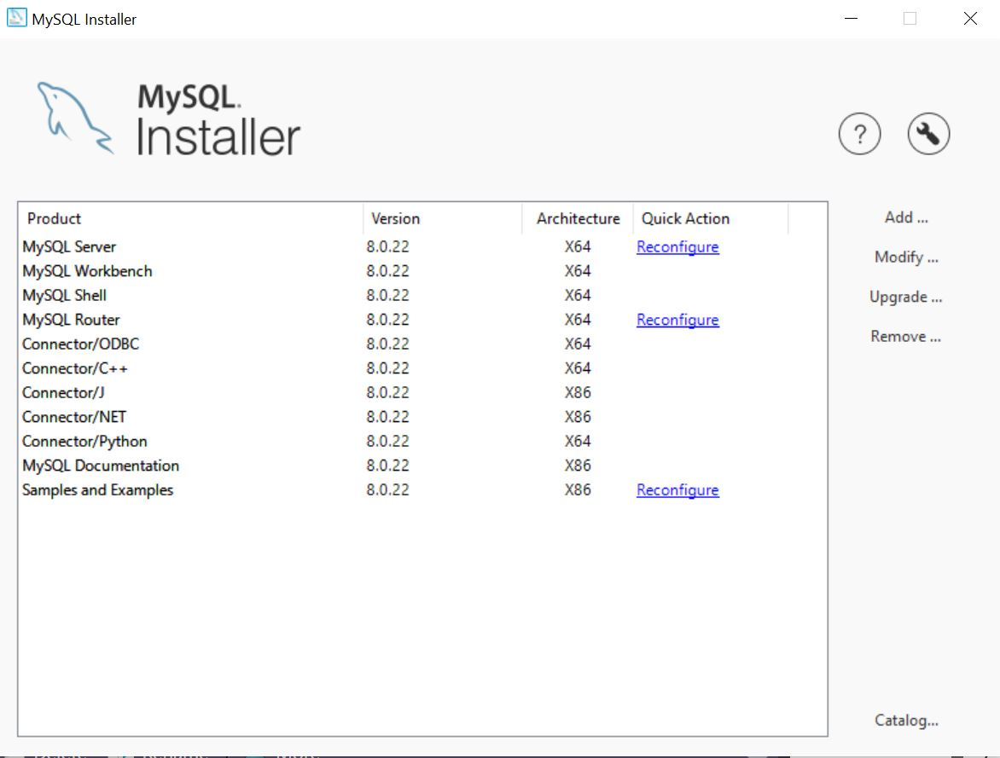

When gone am I, the last of the Jedi will you be. The Force runs strong in your family. Pass on what you have learned.

Photo by Marija Zaric on Unsplash
Recap
Part I
In Part I we made a connection to a SQLite Database (DB).
Part II
In Part II we progressed a bit further, with more in-depth {dplyr} workflows, and we also brought the data into R after doing most of the computation on the database itself.
What are we tackling in Part III?
We’re going to:
Do a quick run through of setting up a MySQL database.
Connect to the database using the
ConnectionsPane in RStudio, which is essentially a connection using an ODBC Driver.Leverage the MySQL DBMS to do the computation of the query on the database, instead of in R, bringing the aggregated data into R when needed. We will
collect()(i.e. bring data into R when we’re using functions that need the full dataset, not the “lazy result”).- For visualisations using
ggplot. - Some functions only work on data in a dataframe like structure, and can’t work with the “lazy query” result. We will need to collect() the data in this case to proceed with our data pipeline e.g. pivot_longer() as we will see later.
- For visualisations using
The project on GitHub, has the code to setup the tables in the MySQL DB from R.
Setup a MySQL DB
- We’re going to set-up a local MySQL DB.
- We’re going to use
{dplyr}’sstarwarsdataset. - We’ll supplement this with survey data from a TidyTuesday dataset back in 2018, as well as some information on the franchise revenue also from TidyTuesday.
Create a local MySQL instance
Go to the MySQL page to download the appropriate server for you. I am on a Windows machine so I used the MySQL Installer for Windows.
Run through the setup.
Follow the setup steps - I installed a “Full version”.
If you did not create your “root” user during the setup process (this happened to me), open the
MySQL Installerfrom your machine’sStartup Menu.Click
Reconfigurenext to MySQL Server.
Check Show Advanced and Logging Options.
Click Next > to navigate the setup, which will ask you to setup a password for
root.
I opened
MySQL Workbenchand setup a user namedadmin, after connecting to the local host. It is good practise to keep yourrootuser aside for security reasons, therefore creating other profiles to access the DB is advised.I created a “schema” by clicking on the little Database icon in
MySQL WorkbenchLink is “Create a new schema in the connected server”.

Alternately in the
MySQL Command Line Clientrun:
CREATE DATABASE starwars CHARACTER SET utf8 COLLATE utf8_unicode_ci;
That’s it for the MySQL DBMS itself, the rest of the work for setting up our DB will be done in R.
Our data
In the {dplyr} 📦 we have a dataset starwars which has information for the characters.
# need to figure out what data is included
# in a package?
# Call data(package = "pkg_name")
# which gives you a nice list of included datasets
data(package = "dplyr")

Let’s have a squizz at the starwars dataset.
starwars
# A tibble: 87 x 14
name height mass hair_color skin_color eye_color birth_year sex
<chr> <int> <dbl> <chr> <chr> <chr> <dbl> <chr>
1 Luke~ 172 77 blond fair blue 19 male
2 C-3PO 167 75 <NA> gold yellow 112 none
3 R2-D2 96 32 <NA> white, bl~ red 33 none
4 Dart~ 202 136 none white yellow 41.9 male
5 Leia~ 150 49 brown light brown 19 fema~
6 Owen~ 178 120 brown, gr~ light blue 52 male
7 Beru~ 165 75 brown light blue 47 fema~
8 R5-D4 97 32 <NA> white, red red NA none
9 Bigg~ 183 84 black light brown 24 male
10 Obi-~ 182 77 auburn, w~ fair blue-gray 57 male
# ... with 77 more rows, and 6 more variables: gender <chr>,
# homeworld <chr>, species <chr>, films <list>, vehicles <list>,
# starships <list>I broke this dataset apart to create different tables containing subsets of the information so we can practise on:
- films: contains information on the movies.
- vehicles: contains a listing on the vehicles in the movies.
- starships: contains a listing for the starships in the movies.
- appearances: which has a listing of each character against the film they appeared in.
- vehicles_piloted: has a listing of each character against the vehicle they drove.
- starships_piloted: has a listing of each character against the starship they piloted.
- characters: has information on each character for example their height, mass etc.
- survey: contains information from a survey run on the popularity of the Star Wars movies, characters etc.
- survey_levels: contains an id per character level rating e.g. Very unfavorably was coded as
1. - franchise: contains the revenue of the franchise across different media - e.g. how much revenue comes from movies, merchandise etc.
| Data Dictionary for the Star Wars Database | ||
|---|---|---|
| Field Type | Notes | |
| films | ||
| id | integer | Identification field for the film e.g. 5 |
| films | string | Movie Name e.g. "The Empire Strikes Back" |
| year | double | Year movie was released e.g. 1980 |
| vehicles | ||
| id | integer | Identification field for the vehicle e.g. 3 |
| vehicles | string | Name of vehicle e.g. "Tribubble bongo" |
| starships | ||
| id | integer | Identification field for the starship e.g. 10 |
| starships | string | Name of starship e.g. "Millennium Falcon" |
| characters | ||
| name | string | Character Name e.g. Leia Organa |
| height | integer | Height of character |
| mass | double | Mass of character |
| hair_color | string | Hair Color of character |
| skin_color | string | Skin Color of character |
| eye_color | string | Eye Color of character |
| birth_year | double | Birth Year of character |
| sex | string | Sex of character |
| gender | string | Gender of character |
| homeworld | string | Homeworld of character |
| species | string | Species of character |
| appearances | ||
| film_id | integer | Link into the films table, e.g. 4 (denoting character appeared in "A New Hope") |
| name | string | Character Name e.g. Leia Organa |
| vehicles_piloted | ||
| vehicle_id | integer | Link into the vehicles table, e.g. 3 (denoting character drove a "Tribubble bongo") |
| name | string | Character Name e.g. Obi-Wan Kenobi |
| starships_piloted | ||
| starship_id | integer | Link into the starships table, e.g. 10 (denoting character piloted a "Millennium Falcon") |
| name | string | Character Name e.g. Chewbacca |
| survey_levels | ||
| id | integer | Identification for the survey response e.g. 1 |
| level | string | The survey response e.g. "Very unfavorably" |
| survey | ||
| respondent_id | integer | Identification for the survey respondent e.g. 3292879998 |
| any_of_6 | string | Did respondent watch any of the 6 movies? (Original 6 before reboot) - e.g. Yes, No |
| star_wars_fan | string | Is the respondent a star wars fan? - e.g. Yes, No |
| watched_The Phantom Menace | string | Did the respondent watch said movie? - e.g. Yes, No |
| watched_A New Hope | string | Did the respondent watch said movie? - e.g. Yes, No |
| watched_Attack of the Clones | string | Did the respondent watch said movie? - e.g. Yes, No |
| watched_Return of the Jedi | string | Did the respondent watch said movie? - e.g. Yes, No |
| watched_Revenge of the Sith | string | Did the respondent watch said movie? - e.g. Yes, No |
| watched_The Empire Strikes Back | string | Did the respondent watch said movie? - e.g. Yes, No |
| rank_A New Hope | double | How does the respondent rank the movie? 1=Best, 6 =Worst |
| rank_Attack of the Clones | double | How does the respondent rank the movie? 1=Best, 6 =Worst |
| rank_Return of the Jedi | double | How does the respondent rank the movie? 1=Best, 6 =Worst |
| rank_Revenge of the Sith | double | How does the respondent rank the movie? 1=Best, 6 =Worst |
| rank_The Empire Strikes Back | double | How does the respondent rank the movie? 1=Best, 6 =Worst |
| rank_The Phantom Menace | double | How does the respondent rank the movie? 1=Best, 6 =Worst |
| `Han Solo` | integer | Link into survey_levels table where 5 = Very favorably |
| `Luke Skywalker` | integer | Link into survey_levels table where 5 = Very favorably |
| `Leia Organa` | integer | Link into survey_levels table where 5 = Very favorably |
| `Anakin Skywalker` | integer | Link into survey_levels table where 5 = Very favorably |
| `Obi-Wan Kenobi` | integer | Link into survey_levels table where 5 = Very favorably |
| `Palpatine` | integer | Link into survey_levels table where 5 = Very favorably |
| `Darth Vader` | integer | Link into survey_levels table where 5 = Very favorably |
| `Lando Calrissian` | integer | Link into survey_levels table where 5 = Very favorably |
| `Boba Fett` | integer | Link into survey_levels table where 5 = Very favorably |
| `C-3P0` | integer | Link into survey_levels table where 5 = Very favorably |
| `R2-D2` | integer | Link into survey_levels table where 5 = Very favorably |
| `Jar Jar Binks` | integer | Link into survey_levels table where 5 = Very favorably |
| `Padme Amidala` | integer | Link into survey_levels table where 5 = Very favorably |
| `Yoda` | integer | Link into survey_levels table where 5 = Very favorably |
| who_shot_first | string | Han, Greedo, or "I don't understand the question" |
| know_expanded_universe | string | Does respondent know the expanded universe? Yes / No |
| fan_expanded_universe | string | Does respondent like the expanded universe? Yes / No |
| trekkie | string | Is respondent a Star Trek fan? Yes / No |
| Gender | string | Gender e.g. Male |
| Age | string | Age range e.g. 30-44 |
| Household Income | string | Income range e.g. $50,000 - $99,999 |
| Education | string | Education level e.g. Some college or Associate degree |
| Location (Census Region) | string | Location of respondent e.g. East South Central |
| franchise | ||
| franchise | string | Star Wars |
| revenue_category | string | Category of revenue generation e.g. Book sales |
| revenue_billion_dollars | double | Revenue earned from category, in billions of dollars |
| year_created | double | Year the franchise was created |
| original_media | string | Original media the franchise was released on e.g. Book, Film |
| creators | string | Who created the franchise |
| owners | string | The owners of the franchise |
Create some tables
Here’s an example of how I created the films, and the associated appearances tables.
(films <- starwars %>%
# get the films column which contains lists of values
select(films) %>%
# flatten the films list - this will create multiple rows for
# each film in the list
unnest(films) %>%
# get rid of duplicates
distinct() )
# A tibble: 7 x 1
films
<chr>
1 The Empire Strikes Back
2 Revenge of the Sith
3 Return of the Jedi
4 A New Hope
5 The Force Awakens
6 Attack of the Clones
7 The Phantom Menace film_years <- tribble(~name, ~year,
#------------------------#------
"The Empire Strikes Back", 1980,
"Revenge of the Sith" , 2005,
"Return of the Jedi" , 1983,
"A New Hope" , 1977,
"The Force Awakens" , 2015,
"Attack of the Clones" , 2002,
"The Phantom Menace" , 1999)
films <- films %>%
# Join the tables to tag on the `year` column
inner_join(film_years,
# left table column = films, right table column = name
by = c("films" = "name"))
# Order of films in terms of episodes, not release date
# We're going to use this to create a factor
film_levels <- c("The Phantom Menace", "Attack of the Clones", "Revenge of the Sith",
"A New Hope", "The Empire Strikes Back", "Return of the Jedi",
"The Force Awakens")
(films <- films %>%
# make "films" a factor using the film_levels we created above
# this will ensure the id = 4 is associated to 'A New Hope'
mutate(films = factor(films, film_levels),) %>%
# create an id column - we will use this later
# the .before just says I want the id column to come before the films column
mutate(id = as.integer(films), .before = "films") %>%
arrange(id))
# A tibble: 7 x 3
id films year
<int> <fct> <dbl>
1 1 The Phantom Menace 1999
2 2 Attack of the Clones 2002
3 3 Revenge of the Sith 2005
4 4 A New Hope 1977
5 5 The Empire Strikes Back 1980
6 6 Return of the Jedi 1983
7 7 The Force Awakens 2015(appearances <- starwars %>%
# let's save the characters appearances in the movies
select(name, films) %>%
# we end up with {character_name, film} for every film the character appears in
unnest(films) %>%
# join it with our new films table
inner_join(films) %>%
# select the id which we rename to film_id, and then the name of the character
select(film_id = id, name))
# A tibble: 173 x 2
film_id name
<int> <chr>
1 5 Luke Skywalker
2 3 Luke Skywalker
3 6 Luke Skywalker
4 4 Luke Skywalker
5 7 Luke Skywalker
6 5 C-3PO
7 2 C-3PO
8 1 C-3PO
9 3 C-3PO
10 6 C-3PO
# ... with 163 more rowsIf you’d like to follow along the RMarkdown file with all the code is here.
Connections Pane
In RStudio there is a
ConnectionsPane.Create a
New Connection.Choose an appropriate driver (e.g. I chose
MySQL ODBC 8.0 Unicode Driver).If you struggle to figure out the parameters needed in the Popup window provided, the connectionstrings website is a great help.
- Choose the DBMS you’re working with - in this case MySQL.
- Copy the connection string - in this case I used the TCP Port string.
Copy the connection string as per the connection strings website and paste it in the
Parametersfield. Amend the parameters such asuser name,passwordetc. as per your instance. If you’re using a corporate database, you need to use the IP Address provided by your Database Administrator asServer, same for your credentials etc.Test the connection.
Copy the full string into the console / script you’re working in.

{kind=link}
Make a connection
ODBC
We use the connection string generated via the Connections Pane to connect to our MySQL DB, and write our data frames into database tables.
Appropriate DBI-compliant package
We may alternatively use the appropriate DBI compliant package. (RMariaDB::MariaDB()).
# Make a connection
con <- dbConnect(drv = RMariaDB::MariaDB(),
host = "localhost",
port = "3306",
user = "admin",
password = "Luke1@my0urf@ther",
dbname = "starwars")
# Good housekeeping means disconnect
dbDisconnect(con)
Writing to a MySQL Database from RStudio
Once we have connected to the database, we’re ready to write our data frames into tables in the DBMS.
# Write data frames we created to actual tables in the database
DBI::dbWriteTable(conn = con,
"films", # name of table in database
films, # the data frame
overwrite = TRUE) # if table exists overwrite it with this data
DBI::dbWriteTable(conn = con, "appearances",
appearances, overwrite = TRUE)
# Good housekeeping means disconnect
dbDisconnect(con)
Communicate with our MySQL Database
Alright, we’re all set now. We can now start to query our database tables in our MySQL DBMS.
Connect
As before the first step is connecting.
# Load libraries
library(DBI)
# Make a connection
con <- dbConnect(odbc::odbc(),
.connection_string = "Driver={MySQL ODBC 8.0 Unicode Driver};
Server=localhost;
Port=3306;
Database=starwars;
Uid=admin;
Pwd=Luke1@my0urf@ther;",
timeout = 10)
dbListTables(con)
[1] "appearances" "characters" "films"
[4] "franchise" "starships" "starships_piloted"
[7] "survey" "survey_levels" "vehicles"
[10] "vehicles_piloted" dbListFields(con, "characters")
[1] "name" "height" "mass" "hair_color" "skin_color"
[6] "eye_color" "birth_year" "sex" "gender" "homeworld"
[11] "species" Take a look around
Let’s get familiar with our data.
tbl(con, "characters")
# Source: table<characters> [?? x 11]
# Database: mysql [admin@:/starwars]
name height mass hair_color skin_color eye_color birth_year sex
<chr> <int> <dbl> <chr> <chr> <chr> <dbl> <chr>
1 Luke~ 172 77 blond fair blue 19 male
2 C-3PO 167 75 <NA> gold yellow 112 none
3 R2-D2 96 32 <NA> white, bl~ red 33 none
4 Dart~ 202 136 none white yellow 41.9 male
5 Leia~ 150 49 brown light brown 19 fema~
6 Owen~ 178 120 brown, gr~ light blue 52 male
7 Beru~ 165 75 brown light blue 47 fema~
8 R5-D4 97 32 <NA> white, red red NA none
9 Bigg~ 183 84 black light brown 24 male
10 Obi-~ 182 77 auburn, w~ fair blue-gray 57 male
# ... with more rows, and 3 more variables: gender <chr>,
# homeworld <chr>, species <chr>tbl(con, "films")
# Source: table<films> [?? x 3]
# Database: mysql [admin@:/starwars]
id films year
<int> <chr> <dbl>
1 1 The Phantom Menace 1999
2 2 Attack of the Clones 2002
3 3 Revenge of the Sith 2005
4 4 A New Hope 1977
5 5 The Empire Strikes Back 1980
6 6 Return of the Jedi 1983
7 7 The Force Awakens 2015tbl(con, "appearances")
# Source: table<appearances> [?? x 2]
# Database: mysql [admin@:/starwars]
film_id name
<int> <chr>
1 5 Luke Skywalker
2 3 Luke Skywalker
3 6 Luke Skywalker
4 4 Luke Skywalker
5 7 Luke Skywalker
6 5 C-3PO
7 2 C-3PO
8 1 C-3PO
9 3 C-3PO
10 6 C-3PO
# ... with more rowsConnecting via the Connections Pane has some additional perks, in that you can have a look at your tables as though you’re in the DBMS itself. You may also preview the first 1000 rows.

Explore data
Let’s see if we can have a look at the popularity of the characters as per the survey dataset.
The TidyTuesday Star Wars survey dataset we used, was based on this FiveThirtyEight article.
(svy_levels <- tbl(con, "survey_levels") %>%
collect())
# A tibble: 6 x 2
id level
<int> <chr>
1 5 Very favorably
2 4 Somewhat favorably
3 3 Neither favorably nor unfavorably (neutral)
4 2 Somewhat unfavorably
5 6 Unfamiliar (N/A)
6 1 Very unfavorably (character_survey <- tbl(con, "survey") %>%
# Let's subset the rows to only those who claim they are fans of
# the franchise
filter(any_of_6 == "Yes", star_wars_fan == "Yes") %>%
# Let's only consider some columns
select(`Han Solo`:`Yoda`, respondent_id,
age = Age, respondent_gender = Gender) %>%
# we have to collect the data since the pivot_longer is
# not set up to work on DB Table data
collect() %>%
# Put each character name which is currently the name of a column
# in a column as a value
pivot_longer(cols = c(`Han Solo`:`Yoda`), names_to = "name",
values_to = "survey_id") %>%
# Get the actual text of the response - e.g. Very Favorable
inner_join(svy_levels,
by = c("survey_id" = "id")))
# A tibble: 7,657 x 6
respondent_id age respondent_gender name survey_id level
<dbl> <chr> <chr> <chr> <int> <chr>
1 3292879998 18-29 Male Han Solo 5 Very fav~
2 3292879998 18-29 Male Luke Sky~ 5 Very fav~
3 3292879998 18-29 Male Leia Org~ 5 Very fav~
4 3292879998 18-29 Male Anakin S~ 5 Very fav~
5 3292879998 18-29 Male Obi-Wan ~ 5 Very fav~
6 3292879998 18-29 Male Palpatine 5 Very fav~
7 3292879998 18-29 Male Darth Va~ 5 Very fav~
8 3292879998 18-29 Male Lando Ca~ 6 Unfamili~
9 3292879998 18-29 Male Boba Fett 6 Unfamili~
10 3292879998 18-29 Male C-3P0 5 Very fav~
# ... with 7,647 more rows# We want to only get the character info for the characters in the survey
# So we want to basically say `WHERE name IN (...)`
# This code is setting that up
characters <- character_survey %>%
select(name) %>%
distinct() %>%
mutate(name = str_glue("'{name}'")) %>%
as_tibble()
colnames(characters) <- NULL
characters <- characters %>% as.list() %>% unlist()
characters <- characters %>% paste(collapse = ", ")
# Creating the WHERE name IN `(...)` part
(sql_code <- str_glue("({characters})"))
('Han Solo', 'Luke Skywalker', 'Leia Organa', 'Anakin Skywalker', 'Obi-Wan Kenobi', 'Palpatine', 'Darth Vader', 'Lando Calrissian', 'Boba Fett', 'C-3P0', 'R2-D2', 'Jar Jar Binks', 'Padme Amidala', 'Yoda')char_query <- tbl(con, "characters") %>%
inner_join(tbl(con, "appearances")) %>%
inner_join(tbl(con, "films"),
by = c("film_id" = "id")) %>%
select(name, gender, homeworld, species, films, year) %>%
# Note here I use the special function `sql()` to directly
# insert a bit of SQL code in my pipeline
filter(name %in% sql(sql_code))
char_query %>%
show_query()
<SQL>
SELECT *
FROM (SELECT `name`, `gender`, `homeworld`, `species`, `films`, `year`
FROM (SELECT `name`, `height`, `mass`, `hair_color`, `skin_color`, `eye_color`, `birth_year`, `sex`, `gender`, `homeworld`, `species`, `film_id`, `films`, `year`
FROM (SELECT `LHS`.`name` AS `name`, `height`, `mass`, `hair_color`, `skin_color`, `eye_color`, `birth_year`, `sex`, `gender`, `homeworld`, `species`, `film_id`
FROM `characters` AS `LHS`
INNER JOIN `appearances` AS `RHS`
ON (`LHS`.`name` = `RHS`.`name`)
) `LHS`
INNER JOIN `films` AS `RHS`
ON (`LHS`.`film_id` = `RHS`.`id`)
) `q01`) `q02`
WHERE (`name` IN ('Han Solo', 'Luke Skywalker', 'Leia Organa', 'Anakin Skywalker', 'Obi-Wan Kenobi', 'Palpatine', 'Darth Vader', 'Lando Calrissian', 'Boba Fett', 'C-3P0', 'R2-D2', 'Jar Jar Binks', 'Padme Amidala', 'Yoda'))(character_info <- character_survey %>%
# we only want info for the characters that formed part of the survey
left_join(char_query %>%
collect()))
# A tibble: 29,012 x 11
respondent_id age respondent_gender name survey_id level gender
<dbl> <chr> <chr> <chr> <int> <chr> <chr>
1 3292879998 18-29 Male Han S~ 5 Very~ mascu~
2 3292879998 18-29 Male Han S~ 5 Very~ mascu~
3 3292879998 18-29 Male Han S~ 5 Very~ mascu~
4 3292879998 18-29 Male Han S~ 5 Very~ mascu~
5 3292879998 18-29 Male Luke ~ 5 Very~ mascu~
6 3292879998 18-29 Male Luke ~ 5 Very~ mascu~
7 3292879998 18-29 Male Luke ~ 5 Very~ mascu~
8 3292879998 18-29 Male Luke ~ 5 Very~ mascu~
9 3292879998 18-29 Male Luke ~ 5 Very~ mascu~
10 3292879998 18-29 Male Leia ~ 5 Very~ femin~
# ... with 29,002 more rows, and 4 more variables: homeworld <chr>,
# species <chr>, films <chr>, year <dbl>character_info <- character_info %>%
mutate(name = as.factor(name)) %>%
# Let's create aggregated survey levels by combining
# Somewhat favorable and Very favourable into the Favourable category
# We're essentially trimming down the categories as per the FiveThirtyEight
# article
mutate(sub_level = case_when(
str_detect(level, "Neither favorably nor unfavorably") ~ "Neutral",
(str_detect(level, " unfavorably") |
str_detect(level, "Somewhat unfavorably")) ~ "Unfavourable",
(str_detect(level, "Very favorably") |
str_detect(level, "Somewhat favorably")) ~ "Favourable",
str_detect(level, "Unfamiliar") ~ "Unfamiliar",
TRUE ~ "None"
)) %>%
mutate(sub_level = factor(sub_level, levels = c("Favourable",
"Neutral", "Unfavourable",
"Unfamiliar")))
# Processing to setup the waffle plot
# We want to understand each character's popularity
character_info <- character_info %>%
select(respondent_id, name, sub_level) %>%
distinct() %>%
group_by(name) %>%
mutate(n = n()) %>%
ungroup() %>%
group_by(name, sub_level) %>%
mutate(
nn = n(),
perc = nn / n * 100.0) %>%
ungroup() %>%
select(name, sub_level, n, nn, perc) %>%
distinct() %>%
inner_join(character_info) %>%
select(respondent_id:respondent_gender, name,
survey_id, level, sub_level:perc, gender:year)
We’ll create a waffle plot to have a look at how popular the characters are. In a few cases the overall percentage is slightly less than 100%. This is due to rounding quirks.
# remotes::install_github("hrbrmstr/waffle")
library(waffle)
character_info %>%
select(name, sub_level, perc) %>%
distinct() %>%
ggplot(aes(fill = sub_level, values = perc %>% round())) +
geom_waffle(colour = "white", n_rows = 10, size = 0.33,
pad = 1, flip = FALSE,
make_proportional = TRUE) +
facet_wrap(~ name) +
labs(title = "Popularity of Star Wars Characters",
subtitle = "Among US respondents who consider themselves Star Wars Fans",
x = "1 square = 1%",
fill = "") +
theme(legend.position="bottom",
panel.spacing = unit(1, "lines"),
strip.background = element_blank(),
axis.text.x = element_blank(),
axis.text.y = element_blank(),
axis.ticks = element_blank())
# Check:
# rounding causing waffle to not be fully filled
character_info %>%
select(name, sub_level, perc) %>%
distinct() %>%
filter(name == "Lando Calrissian")
# A tibble: 4 x 3
name sub_level perc
<fct> <fct> <dbl>
1 Lando Calrissian Unfamiliar 8.61
2 Lando Calrissian Favourable 54.9
3 Lando Calrissian Neutral 28.8
4 Lando Calrissian Unfavourable 7.69Done? Remember to disconnect!
# Good housekeeping means disconnect
dbDisconnect(con)
Fin
That’s it for this series of working with databases. I hope it was useful, if you have any comments or feedback please let me know on Twitter.
Acknowledgements
- Edgar Ruiz’s database work, and teachings.
More resources